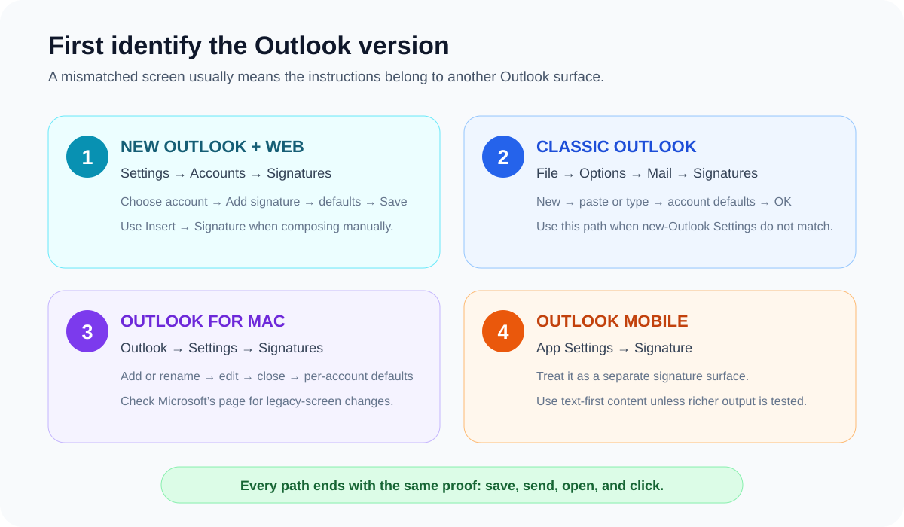

How to Add or Change Your Email Signature in Outlook
Choose your Outlook version first. New Outlook and Outlook on the web use Settings → Accounts → Signatures. Classic Outlook for Windows uses File → Options → Mail → Signatures. Outlook for Mac uses Outlook → Settings → Signatures. The Outlook phone app uses Settings → Signature. To add one, create it and paste; to change one, select it in the same screen, edit and save. Then set the defaults for new messages and replies, and test a received message.
Jump to: New Outlook and web · Classic Outlook · Mac · Change a signature · Remove one · Phone app · Troubleshooting
Microsoft’s current support page separates new Outlook, classic Outlook, and web instructions because the labels and controls differ. Keep its official Outlook signature guide open while following the version-specific steps below.

Add a signature in new Outlook and Outlook on the web
- Select Settings.
- Open Accounts → Signatures. If several accounts are connected, choose the intended account first.
- Select Add signature and give it a distinct name.
- Type or paste the signature into the editor.
- Choose whether it applies to new messages and to replies/forwards.
- Select Save.
- Create a new message and use Insert → Signature if you want to choose a saved signature manually.
Microsoft groups new Outlook, Outlook on the web, and Outlook.com on the same current support surface. If an older account still shows different labels, search Settings for “signature” and confirm the Microsoft support tab that matches the interface.
Add a signature in classic Outlook for Windows
- Open File → Options.
- Select Mail, then Signatures.
- Select New, name the signature, and paste or type it into the editor.
- Choose the email account plus defaults for new messages and replies/forwards.
- Select OK to save, then send a test message.
If Settings → Accounts → Signatures does not exist, you may be in classic Outlook. Microsoft explicitly tells readers to switch to its Classic Outlook instructions when the new-Outlook path does not match.
Add a signature in Outlook for Mac
- From the Outlook menu, select Settings.
- Under Mail, select Signatures.
- Rename the standard signature or add a new one, then type or paste the content.
- Close the editor when finished.
- Under the default-signature controls, choose the account plus defaults for new messages and replies/forwards.
- Send a received-message test from that account.
These labels come from Microsoft’s current Outlook for Mac signature instructions. Microsoft also notes that legacy Outlook for Mac support changes in October 2026, so older screens should be checked against the current support page rather than treated as permanent.
How to change an existing signature in Outlook
Changing a signature happens in the same screen you used to add it. You edit the saved signature rather than creating a new one, so the defaults you set stay in place.
New Outlook and Outlook on the web
- Open Settings → Accounts → Signatures.
- Pick the signature from the list at the top of the editor.
- Edit the text, or select everything in the editor and paste your new signature over it.
- Select Save, then open a new message to check it.
Classic Outlook for Windows
- Open File → Options → Mail → Signatures. In a new message you can also use Message → Signature → Signatures.
- Select the signature under Select signature to edit.
- Edit it, or select all with
Ctrl+Aand paste the new version. - Select Save, then OK.
Outlook for Mac
- Open Outlook → Settings → Signatures.
- Double-click the signature to open it.
- Edit it, or select all with
Cmd+Aand paste the new version, then close the editor to save.
Changing your design rather than a phone number? Rebuild it in the generator and paste over the old one. Editing a complex HTML signature by hand inside Outlook's editor often breaks its table layout.
How to remove or turn off a signature in Outlook
- Turn it off but keep it: set both defaults, New messages and Replies/forwards, to (none) or No signature, then save.
- Delete it: select the signature and choose Delete in new Outlook, Outlook on the web and classic Outlook. In Outlook for Mac, select it and click the minus (−) button.
- Leave it off replies only: keep the new-message default and set replies/forwards to none, or to a shorter reply signature. This keeps long threads readable.
Paste the product’s HTML using the correct control
The button in Email Signature Generator is labelled Copy HTML, not “Copy for Gmail.” After unlocking export, use Copy HTML and paste normally with Ctrl+V on Windows or Cmd+V on Mac.
The product uses table-based layout, inline styles, explicit image dimensions, and public hosted assets when configured. That is a conservative compatibility strategy, not a guarantee of identical rendering across classic Outlook, new Outlook, web, Mac, or mobile.
Do not approve the editor preview alone. Outlook versions do not share one interface or one rendering path. Save, send, and inspect the exact client combination your team and recipients use.
Change your signature in the Outlook app (iPhone and Android)
- Tap your profile picture or account icon at the top left.
- Tap the Settings gear.
- Tap Signature. If you have several accounts, you can set one per account.
- Edit the text and go back to save.
The Outlook mobile app has its own Settings → Signature control. Available formatting can vary by app version and account, and Microsoft’s current desktop support page does not document a portable rich-HTML paste workflow for the mobile editor. Use a short text-first mobile signature unless you have tested richer formatting in the exact app version you deploy.
Outlook signature troubleshooting
| Symptom | Likely check | Repair |
|---|---|---|
| Instructions do not match the screen | New Outlook, classic Outlook, web, Mac, or mobile | Identify the version first and use its matching path. |
| Signature appears for the wrong account | Account selector and per-account defaults | Save the signature against the intended account and test from it. |
| Formatting changes after send | Complex layout, unsupported CSS, or paste conversion | Simplify the HTML, use inline styles and tables, then retest the received message. |
| Photo or logo is missing | Private, local, temporary, or blocked remote image URL | Use a stable public HTTPS URL and keep essential details as text. |
| Reply threads become too large | Full signature default applied to every reply | Use a shorter reply signature or no reply default. |
| Signature missing on replies | Replies/forwards default set to none | Choose the signature in the replies/forwards default and save. |
| Change does not appear on another computer | Some Outlook versions keep their own copy of each signature | Make the same change in each copy of Outlook you use. |
Run a received-message test
- Send from the exact Outlook account and version being configured.
- Open the message in another Outlook version and in Gmail.
- Inspect a narrow mobile inbox for clipping or horizontal overflow.
- Click each link and verify the exact destination.
- Reply and forward once, then check the image-blocked fallback.
The email signature health check can inspect existing HTML before installation. Use the email signature best-practices checklist for content, accessibility, and maintenance decisions.
Skip the formatting: start from your website
Type your company website and the generator fills in your logo, brand colours and links across 28 templates. Preview free, then use Copy HTML when you are ready to paste it into Outlook.